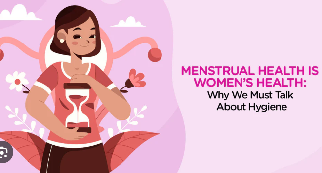
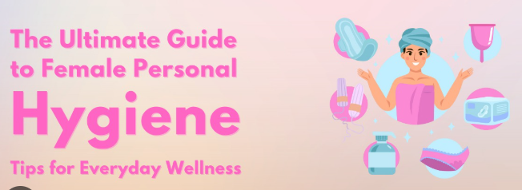
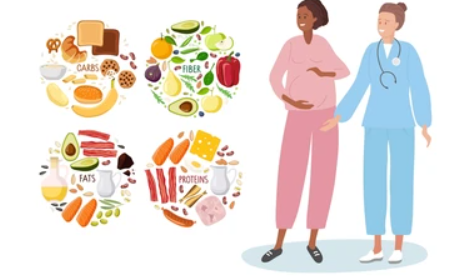
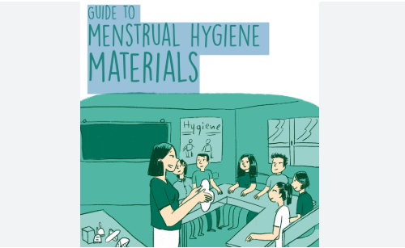
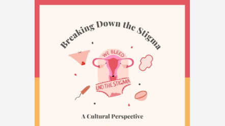
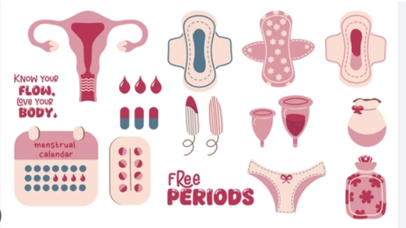
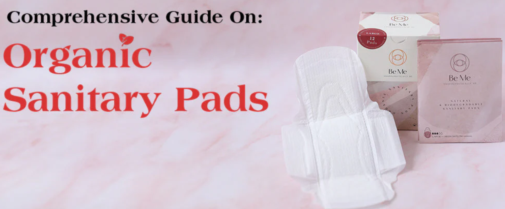
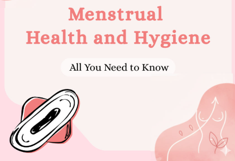

Complete Guide to Menstrual Hygiene Management
Learn everything you need about maintaining proper hygiene during your cycle.

Watch expert-led videos covering essential topics in women's health and hygiene



Trusted articles written by experts on women’s hygiene



Stay updated with the latest developments in women's health

